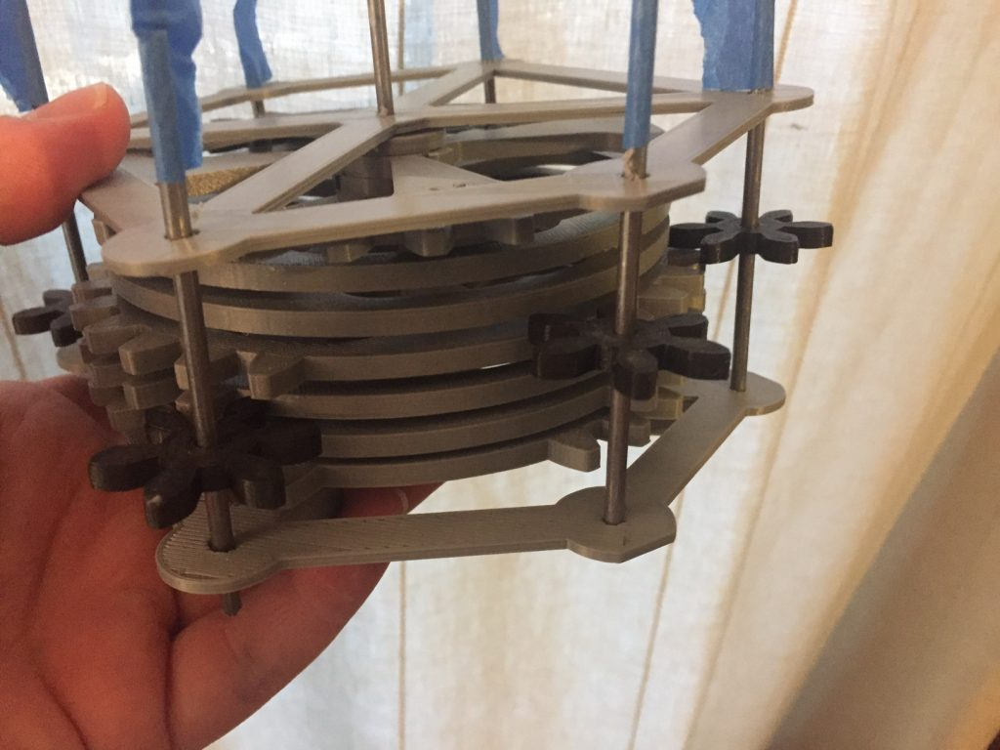
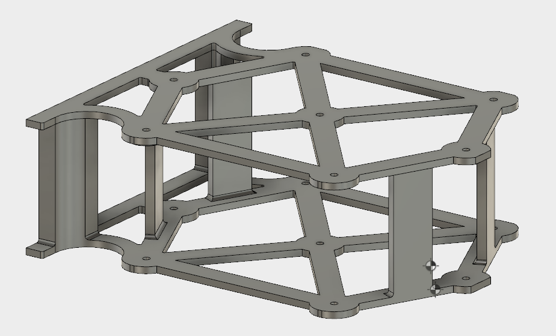
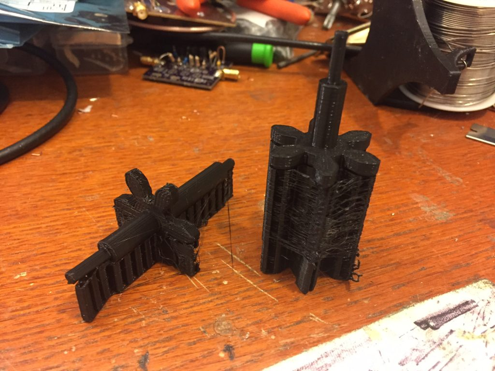

Geared 7-Segment Display, Part 4 - Pinion Gears and First Rotation
This weekend I've added the pinion gears to the seven-segment display, and performed the first test rotation of the mechanism.
As previous noted, the arm gears are 6-tooth gears of module 4 (metric) - in clockmaking terms, these would be pinions. In the clockmaking world, where I've been doing quite a bit of research during this project, there doesn't seem to be a hard dividing line between what's considered a "gear" and what's considered a "pinion," except that gears are big and pinions are small. Fair enough. From this point forward I'll be referring to the arm gears as arm pinions.

I printed 6 of the pinions in just over an hour, and fitted them to their axles, which are just hacked-off pieces of 1/8" rod stock from the hardware store. With the tolerancing on the prints as it is, the pinions are a snug fit on the axles, so I'm not too concerned about slippage once I can get the whole thing turning smoothly.
Right now, the biggest impediment seems to be that the frame lacks rigidity, and easy warps and slews far enough to drive the arm pinions out of mesh with the drive gears. I'm currently working on a two-part version of the frame with interlocking members that firmly affixes both halves on the frame so that they remain rigid and parallel.

I'd assumed when I started this project that the axles (arbors) would need to be made of metal rod or dowel stock, so that they were firm, perfectly round, and rigid. But this being a 3d printing project, I'm now experimenting with a fully3D printed arbor-and-arm-pinion assemblies. These have the advantage that there's no need to manually locate the pinion on the arbor by sliding the arm pinons up and down the arbors - they're all one piece. As a sample, I printed a C-Arm assembly in two different orientations, both vertically and horizontally:

The vertically-printed arbor and pinion came out much better - the axle on the horizontally-printed unit is limited in smoothness by the layer height of the print, while on the vertical print it's limited by the X and Y resolution of the printer. Additionally, while there is significantly more support plastic on the vertically printed unit, it's not touching any of the working surfaces of the pinion itself, making the post-processing and filing significantly simpler. Both seemed to rotate well in the axle holes, however; well enough that I plan to work up a full set of these and test them in the next version of the frame. That means the only non-3D printed part in the project would be the main axle, and possibly the G-Arm tubing.
Next steps are printing the stiffer frame and the pinion/arbor assemblies.